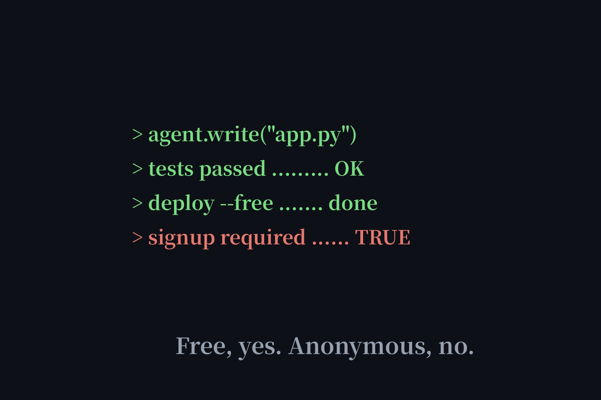

Best Free AI Coding Agents, With the Signup Catch Labeled (2026)
"Best free AI agent for coding" is one of the most-searched variants of our core keyword — and every roundup answers it without mentioning the signup situation. So here's the honest version: five free coding agents, each labeled with exactly what "free" costs you in accounts, keys, and cards. Spoiler: only one needs nothing.

The lineup, honestly labeled
| Agent | Free tier | Sign-up needed? | Best for |
|---|---|---|---|
| Duck.ai | Free, anonymous | No | Code questions in chat |
| Cline | Open-source, free | API key needed (BYOK) | VS Code agentic coding |
| GitHub Copilot | Free tier | Yes — GitHub account | IDE autocomplete |
| 1minAI | Free plan, no card | Yes — account required | All-in-one AI toolbox |
| HuggingChat | Free with account | Yes — HF account | Open-model chat |
Duck.ai — the only one that needs nothing
It won't live inside your editor, but for "explain this error," "write a regex," or "review this function," Duck.ai does the job with zero account — and it's already our Tier 1 pick. If your coding need is Q&A-shaped rather than IDE-shaped, stop here; nothing else on this list beats "no signup" for speed.
Cline — open source, bring your own key
Cline is the open-source agentic coding assistant for VS Code (Plan/Act modes, MCP integration), trusted by a claimed 11M+ developers. The software is free; the catch is inference — you connect your own API key and pay the model provider directly. Our free APIs page lists no-credit-card API options that pair with it, which is the closest thing to free-as-in-freedom coding assistance.
GitHub Copilot — free tier, GitHub account
The default recommendation for a reason: the free tier covers everyday autocomplete and chat in your editor. The price is a GitHub account — free, but an account nonetheless, so it doesn't meet our directory bar. If you already live on GitHub, this is the path of least resistance.
1minAI — toolbox with a login wall
1minAI bundles coding tools (plus writing, image, and audio AI) into one $0 plan with no credit card — but we verified that every feature is gated: you can browse the tool list and type in the box anonymously, yet hitting send pops "Please login to perform this action!" Browsing isn't using. Labeled accordingly.
HuggingChat — the "no account" myth, busted
Videos claim you can chat with no account. We checked: clicking "Start chatting" redirects straight to a Hugging Face login page — zero anonymous access exists. It's a fine free chatbot once you have the (free) account, but the no-signup claim is false, so it stays out of the directory.
The honest truth about coding agents
No agent that writes code inside your editor works without an account or API key — the compute has to bill someone. The no-signup frontier for coding is Q&A-shaped help (Duck.ai), and the free-as-in-freedom frontier is open-source + BYOK (Cline plus a free API tier). Everything in between trades an account for convenience. Now you know exactly what each trade costs.
FAQ
Is there a completely free AI coding agent?
Yes, several — but free doesn't mean no-signup. GitHub Copilot has a free tier (GitHub account required), Cline is open-source and free if you bring your own API key, and Duck.ai answers coding questions with no account at all.
Can I use an AI coding agent without signing up?
For code questions in a chat window, yes: Duck.ai works fully anonymous and is our Tier 1 pick. For an agent that writes code inside your editor, every option we checked requires at least a free account or an API key.
Is HuggingChat really usable without an account?
No. Despite videos claiming otherwise, we verified that clicking Start chatting redirects to a Hugging Face login page — there is zero anonymous access. It needs a free Hugging Face account.